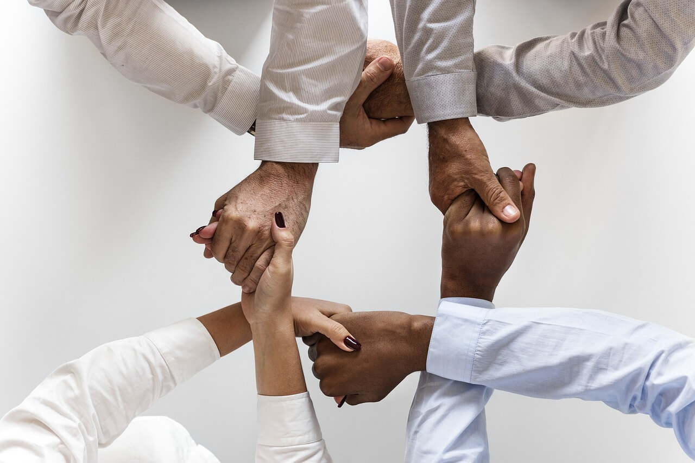

Afinal, o que é inclusão social?
A inclusão social é o conjunto de medidas direcionadas a indivíduos excluídos do meio social, seja por alguma deficiência física ou mental, cor da pele, orientação sexual, gênero ou poder aquisitivo dentro da comunidade. Dessa forma, o objetivo dessas ações é possibilitar que todos os cidadãos tenham oportunidades de acesso a bens e serviços, como saúde, educação, emprego, renda, lazer, cultura, entre outros.
Inclusão de deficientes
O termo deficientes inclui uma série de grupos. Dentre eles, por exemplo, os cadeirantes que se organizam há muitos anos reivindicando acessibilidade para se locomover em segurança. Além disso, existem preconceitos e estereótipos em relação a essas pessoas que precisam ser quebrados. A vida de um deficiente é extremamente difícil, pois geralmente os portadores de deficiência necessita da ajuda de alguém. Os deficientes muitas vezes não são tratados da maneira que deveriam ser, são tratados com ofensas e até mesmo desigualdade na forma de tratamento da sociedade. As pessoas infringem as leis de benefício dos deficientes, tais como: vagas de estacionamento, filas preferenciais e muitas outras. Os deficientes também sofrem bastante com a falta de oportunidade de emprego.
Inclusão de surdos
As pessoas surdas formam uma comunidade cultural com um idioma próprio – no Brasil, é a libras. Apesar da riqueza de sua cultura e sua autonomia, os surdos são alvos de preconceito e também enfrentam a falta de acessibilidade. Nesse sentido, os intérpretes de libras são importantes e o idioma deveria ser ensinado em todo o Brasil.
Inclusão de pessoas trans
Dentro da comunidade LGBT+, as pessoas trans constituem um dos grupos mais vulneráveis. Principalmente, as mulheres trans e negras são vítimas de uma alta taxa de homicídio. Assim, é importante pensar em políticas que propiciem trabalho, moradia e oportunidades educacionais para a população transgênero. As oportunidades para as pessoas trans no mercado de trabalho são raras e, visto que o trabalho, para alguém que pode não ter apoio familiar, é a única fonte de renda e sustentação financeira, isso se torna um problema ainda mais sério. Em muitos processos seletivos, a diversidade é derrubada na fase da triagem, o que faz as empresas ignorarem o legado histórico racista, homofóbico e transfóbico.
Inclusão da população negra
Após quase 400 anos de escravidão, não houve praticamente nenhuma política pública de assistência às pessoas negras anteriormente escravizadas no Brasil. Enquanto isso, outros grupos étnicos e raciais receberam ajuda e privilégios para seu estabelecimento. Portanto, pensar a inclusão da população negra é também refletir sobre medidas de reparação
Inclusão de indígenas
Os povos indígenas são outro grupo que historicamente é excluído das riquezas sociais. Logo, além de ser importante a luta por autonomia das pessoas indígenas, são também relevantes as políticas que facilitam a sua mobilidade dentro da sociedade. Desse modo, cada comunidade possui demandas específicas sobre sua inserção na sociedade. Consequentemente, é sempre necessário contar com as pessoas do próprio grupo para a formulação das políticas de inclusão social.